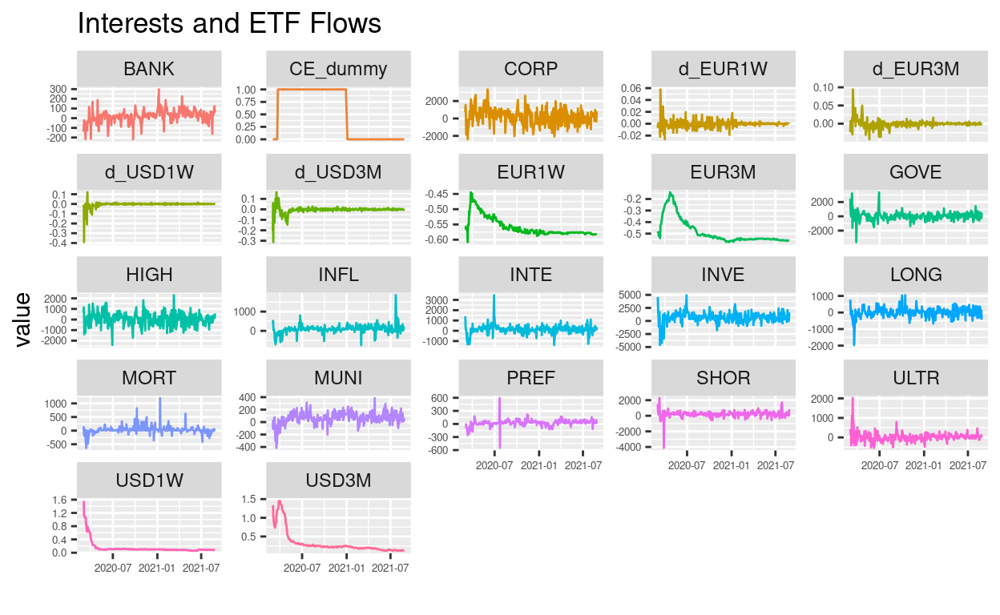

Introduction
Quantitative easing (QE), basically the expansion of a central bank’s balance sheet by means of the large scale purchase of government bonds or other assets with the aim of stimulating the economy,originated in Japan in 2001. QE focuses on bank reserves, or central bank liabilities. The term credit easing (CE) was coined in 2009 by Ben Bernanke, the then Chairman of the Federal Reserve,and focuses on the asset side of the balance sheet with the aim of stimulating credit markets.These markets were hit hard during the global financial crisis of 2007-2008 and central banks like the Federal Reserve and the ECB began introducing credit support measures in its aftermath in an effort to aid recovery and trigger growth. These are part of a suite of unconventional monetary policy measures implemented by central banks in recent years.
On 31st January 2020 the World Health Organisation (WHO) declared a global health emergency due to the COVID-19 pandemic, leading to lockdowns across the globe and, with this, a slowdown in the global economy and need for large scale assistance measures. On 23rd March 2020 the Federal Reserve announced the establishment of the Primary Market Corporate Credit Facility(PMCCF) and the Secondary Corporate Credit Facility (SMCCF), both aimed at supporting corporate bond markets. The SMCCF involves the purchase of corporate bonds in the secondary market, as well as U.S.-listed exchange-traded funds (ETFs).The European Central Bank had introduced a similar credit support program in June 2016 with the Corporate Sector Purchase Program (CSPP), which was then expanded on 18th March 2020 to include non-financial commercial paper, thus making all qualifying commercial papers eligible for purchase under the program.Although ETFs are not eligible for purchase under the CSPP following the initial announcement(and prior to the release of full details) of the program on 10th March 2016 corporate bond ETF trading boomed. The website ETFStrategy.com reported
Data from European-listed ETF trading platform Tradeweb showed that trading in fixed income ETFs increased to 50.3% as a proportion of overall traded volume. The majority of this, 62.9%, was in corporate and high yield bonds, with ‘buys’ in corporate bond ETFs nearly double the amount of ‘sells’.
We investigate the dynamic impact of fixed income ETF fund flows and central bank interest rates. Specifically, we assume that there is a substantive non-linear dynamic structure to bivariate relationships. We assess the bivariate information flow between fixed income ETFs and LIBOR interest rates using transfer entropy, a model-free measure of the asymmetric information flow between time series in a network. This is a popular approach to information diffusion and contagion in a complex systems such as global capital markets[@Bekiros2017,@Nam2019].
Data
The data is sourced from Bloomberg and consists of daily indices capturing net ETF Flows into different bond categories of ETF in the US market. The data is for the period 2021-09-02 - 2016-09-05. The sample also include three interest ratios, US 3-month LIBOR, EU 3-Month LIBOR and the SONIA interest rate benchmark.
Show code
dat[match(y_endog$CORP,dat$CORP),]$Date
[1] "2016-09-07 UTC" "2016-09-08 UTC" "2016-09-09 UTC"
[4] "2016-09-12 UTC" "2016-09-13 UTC" "2016-09-14 UTC"
[7] "2016-09-15 UTC" "2016-09-16 UTC" "2016-09-20 UTC"
[10] "2016-09-21 UTC" "2016-09-22 UTC" "2016-09-26 UTC"
[13] "2016-09-27 UTC" "2016-09-28 UTC" "2016-09-29 UTC"
[16] "2016-09-30 UTC" "2016-10-03 UTC" "2016-10-04 UTC"
[19] "2016-10-05 UTC" "2016-10-06 UTC" "2016-10-07 UTC"
[22] "2016-10-11 UTC" "2016-10-12 UTC" "2016-10-13 UTC"
[25] "2016-10-14 UTC" "2016-10-17 UTC" "2016-10-18 UTC"
[28] "2016-10-20 UTC" "2016-10-21 UTC" "2016-10-24 UTC"
[31] "2016-10-25 UTC" "2016-10-26 UTC" "2016-10-27 UTC"
[34] "2016-10-28 UTC" "2016-10-31 UTC" "2016-11-01 UTC"
[37] "2016-11-02 UTC" "2016-11-04 UTC" "2016-11-10 UTC"
[40] "2016-11-14 UTC" "2016-11-15 UTC" "2016-11-16 UTC"
[43] "2016-11-17 UTC" "2016-11-18 UTC" "2016-11-21 UTC"
[46] "2016-11-22 UTC" "2016-11-23 UTC" "2016-11-24 UTC"
[49] "2016-11-28 UTC" "2016-11-29 UTC" "2016-11-30 UTC"
[52] "2016-12-01 UTC" "2016-12-02 UTC" "2016-12-05 UTC"
[55] "2016-12-06 UTC" "2016-12-07 UTC" "2016-12-08 UTC"
[58] "2016-12-09 UTC" "2016-12-12 UTC" "2016-12-13 UTC"
[61] "2016-12-14 UTC" "2016-12-15 UTC" "2016-12-16 UTC"
[64] "2016-12-19 UTC" "2016-12-20 UTC" "2016-12-21 UTC"
[67] "2016-12-22 UTC" "2016-12-23 UTC" "2016-12-28 UTC"
[70] "2016-12-29 UTC" "2016-12-30 UTC" "2017-01-03 UTC"
[73] "2017-01-04 UTC" "2017-01-05 UTC" "2017-01-09 UTC"
[76] "2017-01-10 UTC" "2017-01-11 UTC" "2017-01-12 UTC"
[79] "2017-01-13 UTC" "2017-01-16 UTC" "2017-01-17 UTC"
[82] "2017-01-18 UTC" "2017-01-19 UTC" "2017-01-20 UTC"
[85] "2017-01-23 UTC" "2017-01-24 UTC" "2017-01-25 UTC"
[88] "2017-01-26 UTC" "2017-01-27 UTC" "2017-01-30 UTC"
[91] "2017-01-31 UTC" "2017-02-01 UTC" "2017-02-02 UTC"
[94] "2017-02-03 UTC" "2017-02-06 UTC" "2017-02-07 UTC"
[97] "2017-02-08 UTC" "2017-02-09 UTC" "2017-02-10 UTC"
[100] "2017-02-13 UTC" "2017-02-14 UTC" "2017-02-15 UTC"
[103] "2017-02-16 UTC" "2017-02-17 UTC" "2017-02-20 UTC"
[106] "2017-02-21 UTC" "2017-02-22 UTC" "2017-02-23 UTC"
[109] "2017-02-24 UTC" "2017-02-27 UTC" "2017-02-28 UTC"
[112] "2017-03-01 UTC" "2017-03-02 UTC" "2017-03-03 UTC"
[115] "2017-03-06 UTC" "2017-03-07 UTC" "2017-03-08 UTC"
[118] "2017-03-10 UTC" "2017-03-14 UTC" "2017-03-15 UTC"
[121] "2017-03-16 UTC" "2017-03-17 UTC" "2017-03-20 UTC"
[124] "2017-03-21 UTC" "2017-03-22 UTC" "2017-03-23 UTC"
[127] "2017-03-27 UTC" "2017-03-28 UTC" "2017-03-29 UTC"
[130] "2017-03-30 UTC" "2017-03-31 UTC" "2017-04-04 UTC"
[133] "2017-04-05 UTC" "2017-04-06 UTC" "2017-04-10 UTC"
[136] "2017-04-11 UTC" "2017-04-12 UTC" "2017-04-13 UTC"
[139] "2017-04-19 UTC" "2017-04-20 UTC" "2017-04-21 UTC"
[142] "2017-04-24 UTC" "2017-04-25 UTC" "2017-04-27 UTC"
[145] "2017-04-28 UTC" "2017-05-03 UTC" "2017-05-04 UTC"
[148] "2017-05-05 UTC" "2017-05-09 UTC" "2017-05-11 UTC"
[151] "2017-05-12 UTC" "2017-05-16 UTC" "2017-05-17 UTC"
[154] "2017-05-18 UTC" "2017-05-19 UTC" "2017-05-22 UTC"
[157] "2017-05-23 UTC" "2017-05-24 UTC" "2017-05-25 UTC"
[160] "2017-05-26 UTC" "2017-05-30 UTC" "2017-05-31 UTC"
[163] "2017-06-01 UTC" "2017-06-02 UTC" "2017-06-05 UTC"
[166] "2017-06-06 UTC" "2017-06-07 UTC" "2017-06-08 UTC"
[169] "2017-06-12 UTC" "2017-06-15 UTC" "2017-06-20 UTC"
[172] "2017-06-21 UTC" "2017-06-22 UTC" "2017-06-23 UTC"
[175] "2017-06-26 UTC" "2017-06-27 UTC" "2017-06-28 UTC"
[178] "2017-06-29 UTC" "2017-06-30 UTC" "2017-07-03 UTC"
[181] "2017-07-07 UTC" "2017-07-13 UTC" "2017-07-17 UTC"
[184] "2017-07-18 UTC" "2017-07-19 UTC" "2017-07-21 UTC"
[187] "2017-07-24 UTC" "2017-07-25 UTC" "2017-07-27 UTC"
[190] "2017-07-31 UTC" "2017-08-02 UTC" "2017-08-04 UTC"
[193] "2017-08-07 UTC" "2017-08-08 UTC" "2017-08-09 UTC"
[196] "2017-08-10 UTC" "2017-08-14 UTC" "2017-08-18 UTC"
[199] "2017-08-21 UTC" "2017-08-24 UTC" "2017-09-06 UTC"
[202] "2017-09-07 UTC" "2017-09-08 UTC" "2017-09-12 UTC"
[205] "2017-09-14 UTC" "2017-09-19 UTC" "2017-09-21 UTC"
[208] "2017-09-22 UTC" "2017-09-26 UTC" "2017-09-27 UTC"
[211] "2017-09-28 UTC" "2017-09-29 UTC" "2017-10-02 UTC"
[214] "2017-10-03 UTC" "2017-10-05 UTC" "2017-10-06 UTC"
[217] "2017-10-10 UTC" "2017-10-11 UTC" "2017-10-13 UTC"
[220] "2017-10-16 UTC" "2017-10-17 UTC" "2017-10-18 UTC"
[223] "2017-10-19 UTC" "2017-10-20 UTC" "2017-10-23 UTC"
[226] "2017-10-24 UTC" "2017-10-25 UTC" "2017-10-27 UTC"
[229] "2017-10-30 UTC" "2017-11-01 UTC" "2017-11-03 UTC"
[232] "2017-11-06 UTC" "2017-11-07 UTC" "2017-11-08 UTC"
[235] "2017-11-09 UTC" "2017-11-10 UTC" "2017-11-13 UTC"
[238] "2017-11-14 UTC" "2017-11-15 UTC" "2017-11-17 UTC"
[241] "2017-11-21 UTC" "2017-11-22 UTC" "2017-11-27 UTC"
[244] "2017-11-28 UTC" "2017-11-29 UTC" "2017-11-30 UTC"
[247] "2017-12-01 UTC" "2017-12-04 UTC" "2017-12-05 UTC"
[250] "2017-12-06 UTC" "2017-12-07 UTC" "2017-12-11 UTC"
[253] "2017-12-14 UTC" "2017-12-15 UTC" "2017-12-18 UTC"
[256] "2017-12-20 UTC" "2017-12-21 UTC" "2017-12-22 UTC"
[259] "2017-12-27 UTC" "2017-12-29 UTC" "2018-01-08 UTC"
[262] "2018-01-09 UTC" "2018-01-10 UTC" "2018-01-11 UTC"
[265] "2018-01-12 UTC" "2018-01-15 UTC" "2018-01-16 UTC"
[268] "2018-01-17 UTC" "2018-01-18 UTC" "2018-01-19 UTC"
[271] "2018-01-22 UTC" "2018-01-23 UTC" "2018-01-25 UTC"
[274] "2018-01-26 UTC" "2018-01-29 UTC" "2018-01-30 UTC"
[277] "2018-01-31 UTC" "2018-02-01 UTC" "2018-02-02 UTC"
[280] "2018-02-06 UTC" "2018-02-07 UTC" "2018-02-08 UTC"
[283] "2018-02-09 UTC" "2018-02-12 UTC" "2018-02-15 UTC"
[286] "2018-02-16 UTC" "2018-02-19 UTC" "2018-02-20 UTC"
[289] "2018-02-22 UTC" "2018-02-23 UTC" "2018-02-26 UTC"
[292] "2018-02-27 UTC" "2018-02-28 UTC" "2018-03-01 UTC"
[295] "2018-03-05 UTC" "2018-03-06 UTC" "2018-03-08 UTC"
[298] "2018-03-09 UTC" "2018-03-12 UTC" "2018-03-13 UTC"
[301] "2018-03-14 UTC" "2018-03-15 UTC" "2018-03-16 UTC"
[304] "2018-03-19 UTC" "2018-03-20 UTC" "2018-03-21 UTC"
[307] "2018-03-22 UTC" "2018-03-23 UTC" "2018-03-26 UTC"
[310] "2018-03-27 UTC" "2018-04-03 UTC" "2018-04-04 UTC"
[313] "2018-04-05 UTC" "2018-04-06 UTC" "2018-04-09 UTC"
[316] "2018-04-10 UTC" "2018-04-12 UTC" "2018-04-13 UTC"
[319] "2018-04-17 UTC" "2018-04-19 UTC" "2018-04-20 UTC"
[322] "2018-04-23 UTC" "2018-04-25 UTC" "2018-04-26 UTC"
[325] "2018-04-27 UTC" "2018-04-30 UTC" "2018-05-01 UTC"
[328] "2018-05-03 UTC" "2018-05-04 UTC" "2018-05-08 UTC"
[331] "2018-05-10 UTC" "2018-05-11 UTC" "2018-05-14 UTC"
[334] "2018-05-16 UTC" "2018-05-17 UTC" "2018-05-22 UTC"
[337] "2018-05-23 UTC" "2018-05-25 UTC" "2018-05-29 UTC"
[340] "2018-05-30 UTC" "2018-05-31 UTC" "2018-06-01 UTC"
[343] "2018-06-04 UTC" "2018-06-06 UTC" "2018-06-07 UTC"
[346] "2018-06-08 UTC" "2018-06-11 UTC" "2018-06-12 UTC"
[349] "2018-06-13 UTC" "2018-06-14 UTC" "2018-06-15 UTC"
[352] "2018-06-18 UTC" "2018-06-21 UTC" "2018-06-22 UTC"
[355] "2018-06-25 UTC" "2018-06-26 UTC" "2018-06-27 UTC"
[358] "2018-06-28 UTC" "2018-06-29 UTC" "2018-07-03 UTC"
[361] "2018-07-04 UTC" "2018-07-05 UTC" "2018-07-09 UTC"
[364] "2018-07-10 UTC" "2018-07-11 UTC" "2018-07-12 UTC"
[367] "2018-07-13 UTC" "2018-07-16 UTC" "2018-07-18 UTC"
[370] "2018-07-19 UTC" "2018-07-20 UTC" "2018-07-27 UTC"
[373] "2018-07-31 UTC" "2018-08-01 UTC" "2018-08-02 UTC"
[376] "2018-08-06 UTC" "2018-08-07 UTC" "2018-08-08 UTC"
[379] "2018-08-10 UTC" "2018-08-13 UTC" "2018-08-15 UTC"
[382] "2018-08-16 UTC" "2018-08-20 UTC" "2018-08-21 UTC"
[385] "2018-08-29 UTC" "2018-08-30 UTC" "2018-08-31 UTC"
[388] "2018-09-04 UTC" "2018-09-05 UTC" "2018-09-07 UTC"
[391] "2018-09-11 UTC" "2018-09-12 UTC" "2018-09-13 UTC"
[394] "2018-09-14 UTC" "2018-09-18 UTC" "2018-09-19 UTC"
[397] "2018-09-21 UTC" "2018-09-25 UTC" "2018-09-26 UTC"
[400] "2018-09-27 UTC" "2018-09-28 UTC" "2018-10-02 UTC"
[403] "2018-10-03 UTC" "2018-10-04 UTC" "2018-10-05 UTC"
[406] "2018-10-09 UTC" "2018-10-10 UTC" "2018-10-11 UTC"
[409] "2018-10-12 UTC" "2018-10-15 UTC" "2018-10-16 UTC"
[412] "2018-10-17 UTC" "2018-10-23 UTC" "2018-10-24 UTC"
[415] "2018-10-26 UTC" "2018-10-30 UTC" "2018-10-31 UTC"
[418] "2018-11-01 UTC" "2018-11-05 UTC" "2018-11-06 UTC"
[421] "2018-11-07 UTC" "2018-11-08 UTC" "2018-11-09 UTC"
[424] "2018-11-14 UTC" "2018-11-15 UTC" "2018-11-16 UTC"
[427] "2018-11-19 UTC" "2018-11-20 UTC" "2018-11-21 UTC"
[430] "2018-11-23 UTC" "2018-11-26 UTC" "2018-11-28 UTC"
[433] "2018-12-03 UTC" "2018-12-04 UTC" "2018-12-05 UTC"
[436] "2018-12-06 UTC" "2018-12-07 UTC" "2018-12-10 UTC"
[439] "2018-12-11 UTC" "2018-12-12 UTC" "2018-12-13 UTC"
[442] "2018-12-14 UTC" "2018-12-17 UTC" "2018-12-18 UTC"
[445] "2018-12-19 UTC" "2018-12-20 UTC" "2018-12-21 UTC"
[448] "2018-12-24 UTC" "2018-12-27 UTC" "2018-12-31 UTC"
[451] "2019-01-02 UTC" "2019-01-03 UTC" "2019-01-04 UTC"
[454] "2019-01-07 UTC" "2019-01-09 UTC" "2019-01-10 UTC"
[457] "2019-01-11 UTC" "2019-01-14 UTC" "2019-01-15 UTC"
[460] "2019-01-16 UTC" "2019-01-18 UTC" "2019-01-22 UTC"
[463] "2019-01-23 UTC" "2019-01-25 UTC" "2019-01-28 UTC"
[466] "2019-01-29 UTC" "2019-01-30 UTC" "2019-01-31 UTC"
[469] "2019-02-01 UTC" "2019-02-05 UTC" "2019-02-06 UTC"
[472] "2019-02-07 UTC" "2019-02-11 UTC" "2019-02-12 UTC"
[475] "2019-02-13 UTC" "2019-02-14 UTC" "2019-02-19 UTC"
[478] "2019-02-20 UTC" "2019-02-21 UTC" "2019-02-22 UTC"
[481] "2019-02-25 UTC" "2019-02-26 UTC" "2019-02-27 UTC"
[484] "2019-02-28 UTC" "2019-03-01 UTC" "2019-03-04 UTC"
[487] "2019-03-05 UTC" "2019-03-06 UTC" "2019-03-07 UTC"
[490] "2019-03-08 UTC" "2019-03-11 UTC" "2019-03-12 UTC"
[493] "2019-03-13 UTC" "2019-03-14 UTC" "2019-03-18 UTC"
[496] "2019-03-19 UTC" "2019-03-20 UTC" "2019-03-21 UTC"
[499] "2019-03-22 UTC" "2019-03-27 UTC" "2019-03-28 UTC"
[502] "2019-03-29 UTC" "2019-04-01 UTC" "2019-04-03 UTC"
[505] "2019-04-04 UTC" "2019-04-08 UTC" "2019-04-09 UTC"
[508] "2019-04-10 UTC" "2019-04-11 UTC" "2019-04-12 UTC"
[511] "2019-04-16 UTC" "2019-04-17 UTC" "2019-04-18 UTC"
[514] "2019-04-23 UTC" "2019-04-24 UTC" "2019-04-26 UTC"
[517] "2019-04-29 UTC" "2019-05-01 UTC" "2019-05-02 UTC"
[520] "2019-05-03 UTC" "2019-05-07 UTC" "2019-05-08 UTC"
[523] "2019-05-09 UTC" "2019-05-13 UTC" "2019-05-16 UTC"
[526] "2019-05-17 UTC" "2019-05-20 UTC" "2019-05-21 UTC"
[529] "2019-05-22 UTC" "2019-05-23 UTC" "2019-05-24 UTC"
[532] "2019-05-28 UTC" "2019-05-29 UTC" "2019-05-30 UTC"
[535] "2019-05-31 UTC" "2019-06-03 UTC" "2019-06-04 UTC"
[538] "2019-06-05 UTC" "2019-06-10 UTC" "2019-06-11 UTC"
[541] "2019-06-14 UTC" "2019-06-18 UTC" "2019-06-20 UTC"
[544] "2019-06-21 UTC" "2019-06-25 UTC" "2019-06-26 UTC"
[547] "2019-06-28 UTC" "2019-07-01 UTC" "2019-07-02 UTC"
[550] "2019-07-03 UTC" "2019-07-08 UTC" "2019-07-11 UTC"
[553] "2019-07-12 UTC" "2019-07-18 UTC" "2019-07-22 UTC"
[556] "2019-07-23 UTC" "2019-07-25 UTC" "2019-07-26 UTC"
[559] "2019-07-29 UTC" "2019-07-30 UTC" "2019-07-31 UTC"
[562] "2019-08-01 UTC" "2019-08-02 UTC" "2019-08-05 UTC"
[565] "2019-08-06 UTC" "2019-08-07 UTC" "2019-08-08 UTC"
[568] "2019-08-09 UTC" "2019-08-12 UTC" "2019-08-13 UTC"
[571] "2019-08-14 UTC" "2019-08-15 UTC" "2019-08-16 UTC"
[574] "2019-08-19 UTC" "2019-08-20 UTC" "2019-08-22 UTC"
[577] "2019-08-23 UTC" "2019-08-28 UTC" "2019-09-03 UTC"
[580] "2019-09-04 UTC" "2019-09-05 UTC" "2019-09-06 UTC"
[583] "2019-09-09 UTC" "2019-09-11 UTC" "2019-09-12 UTC"
[586] "2019-09-13 UTC" "2019-09-16 UTC" "2019-09-17 UTC"
[589] "2019-09-18 UTC" "2019-09-19 UTC" "2019-09-20 UTC"
[592] "2019-09-23 UTC" "2019-09-24 UTC" "2019-09-25 UTC"
[595] "2019-09-27 UTC" "2019-10-02 UTC" "2019-10-03 UTC"
[598] "2019-10-04 UTC" "2019-10-07 UTC" "2019-10-08 UTC"
[601] "2019-10-09 UTC" "2019-10-10 UTC" "2019-10-11 UTC"
[604] "2019-10-15 UTC" "2019-10-16 UTC" "2019-10-17 UTC"
[607] "2019-10-18 UTC" "2019-10-21 UTC" "2019-10-22 UTC"
[610] "2019-10-23 UTC" "2019-10-25 UTC" "2019-10-28 UTC"
[613] "2019-10-29 UTC" "2019-10-31 UTC" "2019-11-01 UTC"
[616] "2019-11-04 UTC" "2019-11-05 UTC" "2019-11-07 UTC"
[619] "2019-11-08 UTC" "2019-11-12 UTC" "2019-11-13 UTC"
[622] "2019-11-14 UTC" "2019-11-15 UTC" "2019-11-18 UTC"
[625] "2019-11-19 UTC" "2019-11-20 UTC" "2019-11-21 UTC"
[628] "2019-11-22 UTC" "2019-11-25 UTC" "2019-11-26 UTC"
[631] "2019-11-27 UTC" "2019-12-02 UTC" "2019-12-03 UTC"
[634] "2019-12-04 UTC" "2019-12-05 UTC" "2019-12-06 UTC"
[637] "2019-12-09 UTC" "2019-12-10 UTC" "2019-12-11 UTC"
[640] "2019-12-12 UTC" "2019-12-13 UTC" "2019-12-17 UTC"
[643] "2019-12-18 UTC" "2019-12-19 UTC" "2019-12-20 UTC"
[646] "2019-12-23 UTC" "2019-12-24 UTC" "2020-01-02 UTC"
[649] "2020-01-03 UTC" "2020-01-06 UTC" "2020-01-07 UTC"
[652] "2020-01-08 UTC" "2020-01-09 UTC" "2020-01-10 UTC"
[655] "2020-01-13 UTC" "2020-01-14 UTC" "2020-01-16 UTC"
[658] "2020-01-17 UTC" "2020-01-21 UTC" "2020-01-22 UTC"
[661] "2020-01-23 UTC" "2020-01-24 UTC" "2020-01-27 UTC"
[664] "2020-01-28 UTC" "2020-01-29 UTC" "2020-01-30 UTC"
[667] "2020-01-31 UTC" "2020-02-03 UTC" "2020-02-04 UTC"
[670] "2020-02-05 UTC" "2020-02-06 UTC" "2020-02-07 UTC"
[673] "2020-02-10 UTC" "2020-02-11 UTC" "2020-02-12 UTC"
[676] "2020-02-13 UTC" "2020-02-14 UTC" "2020-02-18 UTC"
[679] "2020-02-20 UTC" "2020-02-21 UTC" "2020-02-24 UTC"
[682] "2020-02-25 UTC" "2020-02-26 UTC" "2020-02-27 UTC"
[685] "2020-02-28 UTC" "2020-03-02 UTC" "2020-03-03 UTC"
[688] "2020-03-04 UTC" "2020-03-05 UTC" "2020-03-06 UTC"
[691] "2020-03-09 UTC" "2020-03-10 UTC" "2020-03-11 UTC"
[694] "2020-03-12 UTC" "2020-03-13 UTC" "2020-03-16 UTC"
[697] "2020-03-17 UTC" "2020-03-18 UTC" "2020-03-19 UTC"
[700] "2020-03-20 UTC" "2020-03-23 UTC" "2020-03-24 UTC"
[703] "2020-03-25 UTC" "2020-03-26 UTC" "2020-03-27 UTC"
[706] "2020-03-30 UTC" "2020-03-31 UTC" "2020-04-01 UTC"
[709] "2020-04-02 UTC" "2020-04-06 UTC" "2020-04-07 UTC"
[712] "2020-04-08 UTC" "2020-04-09 UTC" "2020-04-14 UTC"
[715] "2020-04-15 UTC" "2020-04-20 UTC" "2020-04-22 UTC"
[718] "2020-04-23 UTC" "2020-04-24 UTC" "2020-04-28 UTC"
[721] "2020-04-29 UTC" "2020-05-01 UTC" "2020-05-04 UTC"
[724] "2020-05-05 UTC" "2020-05-06 UTC" "2020-05-07 UTC"
[727] "2020-05-11 UTC" "2020-05-12 UTC" "2020-05-13 UTC"
[730] "2020-05-14 UTC" "2020-05-15 UTC" "2020-05-18 UTC"
[733] "2020-05-20 UTC" "2020-05-21 UTC" "2020-05-22 UTC"
[736] "2020-05-26 UTC" "2020-05-27 UTC" "2020-05-28 UTC"
[739] "2020-05-29 UTC" "2020-06-01 UTC" "2020-06-02 UTC"
[742] "2020-06-03 UTC" "2020-06-04 UTC" "2020-06-05 UTC"
[745] "2020-06-08 UTC" "2020-06-09 UTC" "2020-06-11 UTC"
[748] "2020-06-12 UTC" "2020-06-15 UTC" "2020-06-17 UTC"
[751] "2020-06-18 UTC" "2020-06-19 UTC" "2020-06-22 UTC"
[754] "2020-06-23 UTC" "2020-06-24 UTC" "2020-06-25 UTC"
[757] "2020-06-26 UTC" "2020-06-29 UTC" "2020-06-30 UTC"
[760] "2020-07-01 UTC" "2020-07-02 UTC" "2020-07-06 UTC"
[763] "2020-07-07 UTC" "2020-07-08 UTC" "2020-07-09 UTC"
[766] "2020-07-10 UTC" "2020-07-15 UTC" "2020-07-16 UTC"
[769] "2020-07-17 UTC" "2020-07-20 UTC" "2020-07-22 UTC"
[772] "2020-07-23 UTC" "2020-07-24 UTC" "2020-07-27 UTC"
[775] "2020-07-28 UTC" "2020-07-29 UTC" "2020-08-04 UTC"
[778] "2020-08-05 UTC" "2020-08-06 UTC" "2020-08-07 UTC"
[781] "2020-08-11 UTC" "2020-08-13 UTC" "2020-08-14 UTC"
[784] "2020-08-17 UTC" "2020-08-18 UTC" "2020-08-19 UTC"
[787] "2020-08-20 UTC" "2020-08-24 UTC" "2020-08-25 UTC"
[790] "2020-08-26 UTC" "2020-08-28 UTC" "2020-09-01 UTC"
[793] "2020-09-02 UTC" "2020-09-03 UTC" "2020-09-04 UTC"
[796] "2020-09-08 UTC" "2020-09-09 UTC" "2020-09-10 UTC"
[799] "2020-09-11 UTC" "2020-09-14 UTC" "2020-09-15 UTC"
[802] "2020-09-16 UTC" "2020-09-17 UTC" "2020-09-18 UTC"
[805] "2020-09-21 UTC" "2020-09-22 UTC" "2020-09-23 UTC"
[808] "2020-09-24 UTC" "2020-09-25 UTC" "2020-09-28 UTC"
[811] "2020-09-29 UTC" "2020-09-30 UTC" "2020-10-02 UTC"
[814] "2020-10-05 UTC" "2020-10-06 UTC" "2020-10-07 UTC"
[817] "2020-10-08 UTC" "2020-10-09 UTC" "2020-10-12 UTC"
[820] "2020-10-13 UTC" "2020-10-14 UTC" "2020-10-15 UTC"
[823] "2020-10-16 UTC" "2020-10-19 UTC" "2020-10-20 UTC"
[826] "2020-10-21 UTC" "2020-10-22 UTC" "2020-10-23 UTC"
[829] "2020-10-26 UTC" "2020-10-27 UTC" "2020-10-28 UTC"
[832] "2020-10-29 UTC" "2020-10-30 UTC" "2020-11-02 UTC"
[835] "2020-11-03 UTC" "2020-11-04 UTC" "2020-11-05 UTC"
[838] "2020-11-06 UTC" "2020-11-09 UTC" "2020-11-10 UTC"
[841] "2020-11-12 UTC" "2020-11-13 UTC" "2020-11-16 UTC"
[844] "2020-11-17 UTC" "2020-11-18 UTC" "2020-11-19 UTC"
[847] "2020-11-23 UTC" "2020-11-24 UTC" "2020-11-25 UTC"
[850] "2020-11-27 UTC" "2020-11-30 UTC" "2020-12-01 UTC"
[853] "2020-12-02 UTC" "2020-12-03 UTC" "2020-12-04 UTC"
[856] "2020-12-08 UTC" "2020-12-11 UTC" "2020-12-14 UTC"
[859] "2020-12-16 UTC" "2020-12-17 UTC" "2020-12-18 UTC"
[862] "2020-12-21 UTC" "2020-12-22 UTC" "2020-12-23 UTC"
[865] "2020-12-24 UTC" "2020-12-29 UTC" "2021-01-04 UTC"
[868] "2021-01-05 UTC" "2021-01-06 UTC" "2021-01-07 UTC"
[871] "2021-01-08 UTC" "2021-01-11 UTC" "2021-01-12 UTC"
[874] "2021-01-13 UTC" "2021-01-14 UTC" "2021-01-15 UTC"
[877] "2021-01-19 UTC" "2021-01-20 UTC" "2021-01-21 UTC"
[880] "2021-01-22 UTC" "2021-01-25 UTC" "2021-01-26 UTC"
[883] "2021-01-27 UTC" "2021-01-28 UTC" "2021-01-29 UTC"
[886] "2021-02-01 UTC" "2021-02-02 UTC" "2021-02-03 UTC"
[889] "2021-02-04 UTC" "2021-02-05 UTC" "2021-02-08 UTC"
[892] "2021-02-09 UTC" "2021-02-10 UTC" "2021-02-11 UTC"
[895] "2021-02-12 UTC" "2021-02-16 UTC" "2021-02-17 UTC"
[898] "2021-02-18 UTC" "2021-02-19 UTC" "2021-02-22 UTC"
[901] "2021-02-23 UTC" "2021-02-24 UTC" "2021-02-25 UTC"
[904] "2021-02-26 UTC" "2021-03-01 UTC" "2021-03-02 UTC"
[907] "2021-03-03 UTC" "2021-03-04 UTC" "2021-03-05 UTC"
[910] "2021-03-08 UTC" "2021-03-09 UTC" "2021-03-10 UTC"
[913] "2021-03-11 UTC" "2021-03-12 UTC" "2021-03-15 UTC"
[916] "2021-03-16 UTC" "2021-03-17 UTC" "2021-03-18 UTC"
[919] "2021-03-19 UTC" "2021-03-23 UTC" "2021-03-24 UTC"
[922] "2021-03-25 UTC" "2021-03-26 UTC" "2021-03-29 UTC"
[925] "2021-03-30 UTC" "2021-03-31 UTC" "2021-04-01 UTC"
[928] "2021-04-06 UTC" "2021-04-07 UTC" "2021-04-08 UTC"
[931] "2021-04-09 UTC" "2021-04-12 UTC" "2021-04-13 UTC"
[934] "2021-04-14 UTC" "2021-04-15 UTC" "2021-04-16 UTC"
[937] "2021-04-19 UTC" "2021-04-20 UTC" "2021-04-21 UTC"
[940] "2021-04-22 UTC" "2021-04-23 UTC" "2021-04-26 UTC"
[943] "2021-04-27 UTC" "2021-04-28 UTC" "2021-04-29 UTC"
[946] "2021-04-30 UTC" "2021-05-04 UTC" "2021-05-05 UTC"
[949] "2021-05-06 UTC" "2021-05-07 UTC" "2021-05-11 UTC"
[952] "2021-05-12 UTC" "2021-05-13 UTC" "2021-05-14 UTC"
[955] "2021-05-17 UTC" "2021-05-18 UTC" "2021-05-19 UTC"
[958] "2021-05-20 UTC" "2021-05-21 UTC" "2021-05-24 UTC"
[961] "2021-05-25 UTC" "2021-05-26 UTC" "2021-05-27 UTC"
[964] "2021-05-28 UTC" "2021-06-01 UTC" "2021-06-02 UTC"
[967] "2021-06-03 UTC" "2021-06-04 UTC" "2021-06-07 UTC"
[970] "2021-06-08 UTC" "2021-06-09 UTC" "2021-06-10 UTC"
[973] "2021-06-11 UTC" "2021-06-14 UTC" "2021-06-15 UTC"
[976] "2021-06-16 UTC" "2021-06-17 UTC" "2021-06-18 UTC"
[979] "2021-06-21 UTC" "2021-06-22 UTC" "2021-06-23 UTC"
[982] "2021-06-24 UTC" "2021-06-25 UTC" "2021-06-28 UTC"
[985] "2021-06-29 UTC" "2021-06-30 UTC" "2021-07-01 UTC"
[988] "2021-07-02 UTC" "2021-07-06 UTC" "2021-07-07 UTC"
[991] "2021-07-08 UTC" "2021-07-09 UTC" "2021-07-12 UTC"
[994] "2021-07-13 UTC" "2021-07-14 UTC" "2021-07-15 UTC"
[997] "2021-07-19 UTC" "2021-07-20 UTC" "2021-07-21 UTC"
[1000] "2021-07-23 UTC" "2021-07-26 UTC" "2021-07-27 UTC"
[1003] "2021-07-28 UTC" "2021-07-29 UTC" "2021-07-30 UTC"
[1006] "2021-08-02 UTC" "2021-08-03 UTC" "2021-08-04 UTC"
[1009] "2021-08-05 UTC" "2021-08-06 UTC" "2021-08-09 UTC"
[1012] "2021-08-10 UTC" "2021-08-11 UTC" "2021-08-12 UTC"
[1015] "2021-08-13 UTC" "2021-08-16 UTC" "2021-08-17 UTC"
[1018] "2021-08-18 UTC" "2021-08-19 UTC" "2021-08-20 UTC"
[1021] "2021-08-23 UTC" "2021-08-25 UTC" "2021-08-26 UTC"
[1024] "2021-08-27 UTC"Show code
y_endog %>%
mutate(Date=dat[match(y_endog$CORP,dat$CORP),]$Date) %>%
gather(variable,value,-Date) %>%
mutate(predictors=if_else(variable %in% c('d_USD3M','d_EUR3M','d_USD1W','d_EUR1W'),"Rate_Change","Flows")) %>%
ggplot(aes(x=Date,y=value,colour=variable)) +
geom_line() +
labs(title="Interests and ETF Flows",x="") +
facet_wrap(~variable,scales = "free_y") +
theme(legend.position = 'none',
axis.text = element_text(size=5))

Linear pairwise correlations
Some obvious correlation in the three interest rates. There are also some strong correlations among the ETF bond flows that will require careful consideration. Is this due to overlapping categorisation?
Information transfer measurement
The quantification of information transfer commonly relies on measures that have been derived from subject-specific assumptions and restrictions concerning the underlying stochastic processes or theoretical models. With the development of transfer entropy, information theory based measures have become a popular alternative to quantify information flows within various disciplines. Transfer entropy is a non-parametric measure of directed, asymmetric information transfer between two processes. We quantify the information flow between two stationary time series and test for its statistical significance using Shannon transfer entropy(TE)1.
In the literature, the Granger causality has been addressed in many fields, including finance. Despite its success in the identification of couplings between the interacting variables, the use of structural models restricts its performance. Unlike Granger causality, TE is a quantity that is directly estimated from data and it does not suffer from such constraints. In the specific case of Gaussian distributed random variables, equivalence between TE and Granger causality has been proven.
Measuring information flows using transfer entropy
Let \(log\) denote the logarithm to the base 2, then informational gain is measured in bits. Shannon entropy (Shannon 1948) states that for a discrete random variable \(J\) with probability distribution \(p(j)\), where \(j\) stands for the different outcomes the random variable \(J\) can take, the average number of bits required to optimally encode independent draws from the distribution of \(J\) can be calculated as
\[ H_J = - \sum_j p(j) \cdot log \left(p(j)\right). \]
Formally, Shannon’s formula is a measure for uncertainty, which increases with the number of bits needed to optimally encode a sequence of realizations of \(J\). In order to measure the information flow between two processes, Shannon entropy is combined with the concept of the Kullback-Leibler distance [@KL51] and by assuming that the underlying processes evolve over time according to a Markov process (Schreiber 2000).
Let \(I\) and \(J\) denote two discrete random variables with marginal probability distributions \(p(i)\) and \(p(j)\) and joint probability distribution \(p(i,j)\), whose dynamical structures correspond to stationary Markov processes of order \(k\) (process \(I\)) and \(l\) (process \(J\)). The Markov property implies that the probability to observe \(I\) at time \(t+1\) in state \(i\) conditional on the \(k\) previous observations is \(p(i_{t+1}|i_t,...,i_{t-k+1})=p(i_{t+1}|i_t,...,i_{t-k})\). The average number of bits needed to encode the observation in \(t+1\) if the previous \(k\) values are known is given by
\[ h_I(k)=- \sum_i p\left(i_{t+1}, i_t^{(k)}\right) \cdot log \left(p\left(i_{t+1}|i_t^{(k)}\right)\right), \] where \(i^{(k)}_t=(i_t,...,i_{t-k+1})\). \(h_J(l)\) can be derived analogously for process \(J\). In the bivariate case, information flow from process \(J\) to process \(I\) is measured by quantifying the deviation from the generalized Markov property \(p(i_{t+1}| i_t^{(k)})=p(i_{t+1}| i_t^{(k)},j_t^{(l)})\) relying on the Kullback-Leibler distance (Schreiber 2000). Thus, (Shannon) transfer entropy is given by:
\[ T_{J \rightarrow I}(k,l) = \sum_{i,j} p\left(i_{t+1}, i_t^{(k)}, j_t^{(l)}\right) \cdot log \left(\frac{p\left(i_{t+1}| i_t^{(k)}, j_t^{(l)}\right)}{p\left(i_{t+1}|i_t^{(k)}\right)}\right), \] where \(T_{J\rightarrow I}\) consequently measures the information flow from \(J\) to \(I\) ( \(T_{I \rightarrow J}\) as a measure for the information flow from \(I\) to \(J\) can be derived analogously).
The above transfer entropy estimates are commonly biased due to small sample effects. A remedy is provided by the effective transfer entropy [@MK02], which is computed in the following way:
\[ ET_{J \rightarrow I}(k,l)= T_{J \rightarrow I}(k,l)- T_{J_{\text{shuffled}} \rightarrow I}(k,l), \] where \(T_{J_{\text{shuffled}} \rightarrow I}(k,l)\) indicates the transfer entropy using a shuffled version of the time series of \(J\). Shuffling implies randomly drawing values from the time series of \(J\) and realigning them to generate a new time series. This procedure destroys the time series dependencies of \(J\) as well as the statistical dependencies between \(J\) and \(I\). As a result \(T_{J_{\text{shuffled}} \rightarrow I}(k,l)\) converges to zero with increasing sample size and any nonzero value of \(T_{J_{\text{shuffled}} \rightarrow I}(k,l)\) is due to small sample effects. The transfer entropy estimates from shuffled data can therefore be used as an estimator for the bias induced by these small sample effects. To derive a consistent estimator, shuffling is repeated many times and the average of the resulting shuffled transfer entropy estimates across all replications is subtracted from the Shannon transfer entropy estimate to obtain a bias corrected effective transfer entropy estimate.
In order to assess the statistical significance of transfer entropy estimates, we rely on a Markov block bootstrap as proposed by (Dimpfl 2013). In contrast to shuffling, the Markov block bootstrap preserves the dependencies within each time series. Thereby, it generates the distribution of transfer entropy estimates under the null hypothesis of no information transfer, i.e. randomly drawn blocks of process \(J\) are realigned to form a simulated series, which retains the univariate dependencies of \(J\) but eliminates the statistical dependencies between \(J\) and \(I\). Shannon transfer entropy is then estimated based on the simulated time series. Repeating this procedure yields the distribution of the transfer entropy estimate under the null of no information flow. The p-value associated with the null hypothesis of no information transfer is given by \(1-\hat{q}_{TE}\), where \(\hat{q}_{TE}\) denotes the quantile of the simulated distribution that corresponds to the original transfer entropy estimate.
The calculation of Shannon transfer entropy is based on discrete data. If the data does not exhibit a discrete structure that allows for transfer entropy estimation, it has to be discretized. This can be achieved by symbolic recoding, i.e. by partitioning the data into a finite number of bins, which can either be based on defining upper and lower bounds for the bins a priori or by choosing specific quantiles of the empirical distribution of the data. Denote the bounds specified for the \(n\) bins by \(q_1, q_2, ..., q_n\), where \(q_1< q_2< ... <q_n\), and consider a time series denoted by \(y_t\), the data is recoded as
\[ S_t= \begin{cases} ~1~~~~~~~~ \mbox{ for }~ y_t\leq q_1\\ ~ 2~ ~~~~~~~\mbox{ for }~ q_1<y_t\leq q_2\\ ~\vdots~~~~~~~~~~~~~~~~~\vdots\\ ~n-1~~\mbox{ for }~ q_{n-1}<y_t \leq q_n\\ ~n ~~~~~~~~\mbox{ for } ~ y_t\geq q_n \end{cases}. \] Thereby, each value in the observed time series \(y_t\) is replaced by an integer (\(1\),\(2\),…,\(n\)), according to how \(S_t\) relates to the interval specified by the lower and upper bounds \(q_1\) to \(q_n\). The choice of the bins should be motivated by the distribution of the data.2
Results
Shannon’s transfer entropy measure the information flow (reduction in uncertainty in probability) is a model-free way that captures the non-linear complexity of a financial network. As an exploratory exercise, we assess the information transfer from and to the changes of three interest rates.
Our analysis considers the full period of analysis and the period of the credit easing programme. For each period we assess the information gain, measured using the effective transfer entropy, between the fund flows and the three interest rate changes. We investigate the information flow between series up to \(t-3\) periods.
Results for Full Sample
Show code
rename_data<-function(df){
df[, ticker := factor(ticker,
levels = unique(df$ticker)[order(df[dir == "X->Y"]$ete)])]
df[, dir := factor(dir, levels = c("X->Y", "Y->X"),
labels = c("Flow towards Interest Rate Changes",
"Flow from Interest Rate Changes to .."))]
}
plot_data<-rename_data(res_EU)
ggplot(plot_data, aes(x = ticker, y = ete)) +
facet_wrap(~dir) +
geom_hline(yintercept = 0, color = "gray") +
theme(axis.text.x = element_text(angle = 90)) +
labs(x = NULL, y = "Effective Transfer Entropy") +
geom_errorbar(aes(ymin = ete - qnorm(0.95) * se,
ymax = ete + qnorm(0.95) * se),
width = 0.25, col = "blue") +
geom_point()

Figure 1: Effective Transfer Entropy for Change in 3-Month EU Libor
Show code
plot_data<-rename_data(res_US)
ggplot(plot_data, aes(x = ticker, y = ete)) +
facet_wrap(~dir) +
geom_hline(yintercept = 0, color = "gray") +
theme(axis.text.x = element_text(angle = 90)) +
labs(x = NULL, y = "Effective Transfer Entropy") +
geom_errorbar(aes(ymin = ete - qnorm(0.95) * se,
ymax = ete + qnorm(0.95) * se),
width = 0.25, col = "blue") +
geom_point()
Figure 2: Effective Transfer Entropy for Daily Change in 3-Month US Libor
Show code
plot_data<-rename_data(res_EU_1W)
ggplot(plot_data, aes(x = ticker, y = ete)) +
facet_wrap(~dir) +
geom_hline(yintercept = 0, color = "gray") +
theme(axis.text.x = element_text(angle = 90)) +
labs(x = NULL, y = "Effective Transfer Entropy") +
geom_errorbar(aes(ymin = ete - qnorm(0.95) * se,
ymax = ete + qnorm(0.95) * se),
width = 0.25, col = "blue") +
geom_point()

(#fig:EU 1w)Effective Transfer Entropy for Daily Change in 1-Week EU Libor
Show code
plot_data<-rename_data(res_US_1W)
ggplot(plot_data, aes(x = ticker, y = ete)) +
facet_wrap(~dir) +
geom_hline(yintercept = 0, color = "gray") +
theme(axis.text.x = element_text(angle = 90)) +
labs(x = NULL, y = "Effective Transfer Entropy") +
geom_errorbar(aes(ymin = ete - qnorm(0.95) * se,
ymax = ete + qnorm(0.95) * se),
width = 0.25, col = "blue") +
geom_point()

(#fig:US 1w)Effective Transfer Entropy for Daily Change in 1-Week US Libor
Results for credit easing period 23-3-2020 to 31-12-2020
Show code
plot_data<-rename_data(res_EU_CE)
ggplot(plot_data, aes(x = ticker, y = ete)) +
facet_wrap(~dir) +
geom_hline(yintercept = 0, color = "gray") +
theme(axis.text.x = element_text(angle = 90)) +
labs(x = NULL, y = "Effective Transfer Entropy") +
geom_errorbar(aes(ymin = ete - qnorm(0.95) * se,
ymax = ete + qnorm(0.95) * se),
width = 0.25, col = "blue") +
geom_point()

Figure 3: Effective Transfer Entropy for Daily Change in 3-month EU Libor
Show code
plot_data<-rename_data(res_EU_CE_1W)
ggplot(plot_data, aes(x = ticker, y = ete)) +
facet_wrap(~dir) +
geom_hline(yintercept = 0, color = "gray") +
theme(axis.text.x = element_text(angle = 90)) +
labs(x = NULL, y = "Effective Transfer Entropy") +
geom_errorbar(aes(ymin = ete - qnorm(0.95) * se,
ymax = ete + qnorm(0.95) * se),
width = 0.25, col = "blue") +
geom_point()
Figure 4: Effective Transfer Entropy for Daily Change in 1-week EU Libor
Show code
plot_data<-rename_data(res_US_CE)
ggplot(plot_data, aes(x = ticker, y = ete)) +
facet_wrap(~dir) +
geom_hline(yintercept = 0, color = "gray") +
theme(axis.text.x = element_text(angle = 90)) +
labs(x = NULL, y = "Effective Transfer Entropy") +
geom_errorbar(aes(ymin = ete - qnorm(0.95) * se,
ymax = ete + qnorm(0.95) * se),
width = 0.25, col = "blue") +
geom_point()
Figure 5: Effective Transfer Entropy for Daily Change 3-month US Libor
Show code
plot_data<-rename_data(res_US_CE_1W)
ggplot(plot_data, aes(x = ticker, y = ete)) +
facet_wrap(~dir) +
geom_hline(yintercept = 0, color = "gray") +
theme(axis.text.x = element_text(angle = 90)) +
labs(x = NULL, y = "Effective Transfer Entropy") +
geom_errorbar(aes(ymin = ete - qnorm(0.95) * se,
ymax = ete + qnorm(0.95) * se),
width = 0.25, col = "blue") +
geom_point()
Figure 6: Effective Transfer Entropy for Daily Change 1-week US Libor
Things to do
- Relative Explanation Added
To measure the amount of information gain due to the transfer entropy, we follow Marschinski and Kantz (2002) by relating the information gain to the entropy of the series based on the REA (relative explanation added) measure defined as follows:
\[REA(m,l)=\frac{T_{Y \to X}(m,l)}{H(X_0|X_{-1,...,X_{-m}})}\]
Here the information flow from Y to X, measured by the transfer entropy, is related to the total flow of information based the conditional block entropy of X. Put differently, it measures the additional information gain by observing the history of X and Y when already observing X.
- Regression analysis based on:
Kolokolova, O., Lin, M.-T., & Poon, S.-H. (2020). Too big to ignore? Hedge fund flows and bond yields. Journal of Banking & Finance, 112, 105271.
- Multivariate transfer entropy
Gonzalez, M. R., Basse, T., Saft, D., & Kunze, F. (2021). Leading indicators for US house prices: New Evidence and Implications for EU Financial Risk Managers. European Financial Management, eufm.12325. https://doi.org/10.1111/eufm.12325 Behrendt, S., & Prange, P. (2021). What are you searching for? On the equivalence of proxies for online investor attention. Finance Research Letters, 38, 101401. Multivariate transfer entropy: Lizier & Rubinov, 2012, Preprint, Technical Report 25/2012, Max Planck Institute for Mathematics in the Sciences. Available from: http://www.mis.mpg.de/preprints/2012/preprint2012_25.pdf https://github.com/pwollstadt/IDTxl
- Identify regimes using a HMM VAR model and test transfer entropy between regimes??
Reference
Lundberg, S. M., & Lee, S.-I. (2017). A unified approach to interpreting model predictions. Proceedings of the 31st International Conference on Neural Information Processing Systems, 4768–4777.
Brandt, P. T., Colaresi, M., & Freeman, J. R. (2008). The Dynamics of Reciprocity, Accountability, and Credibility. The Journal of Conflict Resolution, 52(3), 343–374.
Brandt, P. T., & Freeman, J. R. (2006). Advances in Bayesian Time Series Modeling and the Study of Politics: Theory Testing, Forecasting, and Policy Analysis. Political Analysis: An Annual Publication of the Methodology Section of the American Political Science Association, 14(1), 1–36.
Brandt, P. T., Freeman, J. R., & Schrodt, P. A. (2014). Evaluating forecasts of political conflict dynamics. International Journal of Forecasting, 30(4), 944–962.
Beck, Christian, and Friedrich Schögl. 1993. Thermodynamics of Chaotic Systems: An Introduction. Cambridge Nonlinear Science Series 4. Cambridge University Press.
Dimpfl, Thomas, and Franziska Julia Peter. 2013. “Using Transfer Entropy to Measure Information Flows Between Financial Markets.” Studies in Nonlinear Dynamics and Econometrics 17 (1): 85–102.
Jizba, Petr, Hagen Kleinert, and Mohammad Shefaat. 2012. “Renyi’s Information Transfer Between Financial Time Series.” Physica A 391: 2971–89.
Kullback, S., and R. A. Leibler. 1951. “On Information and Sufficiency.” The Annals of Mathematical Statistics 1: 79–86.
Marschinski, R., and H. Kantz. 2002. “Analysing the Information Flow Between Financial Time Series: An Improved Estimator for Transfer Entropy.” European Physical Journal B 30 (2): 275–81.
Shannon, C. E. 1948. “A Mathematical Theory of Communication.” Bell System Technical Journal 27: 379–423.
Sims, C. A., Waggoner, D. F., & Zha, T. (2008). Methods for inference in large multiple-equation Markov-switching models. Journal of Econometrics, 146(2), 255–274.
Sims, C. A., & Zha, T. (1998). Bayesian Methods for Dynamic Multivariate Models. International Economic Review, 39(4), 949–968.
Sims, C. A., & Zha, T. (2006). Were There Regime Switches in U.S. Monetary Policy? The American Economic Review, 96(1), 54–81.
Behrendt, S., Dimpfl, T., Peter, F. J., & Zimmermann, D. J. (2019). RTransferEntropy — Quantifying information flow between different time series using effective transfer entropy. SoftwareX, 10, 100265.